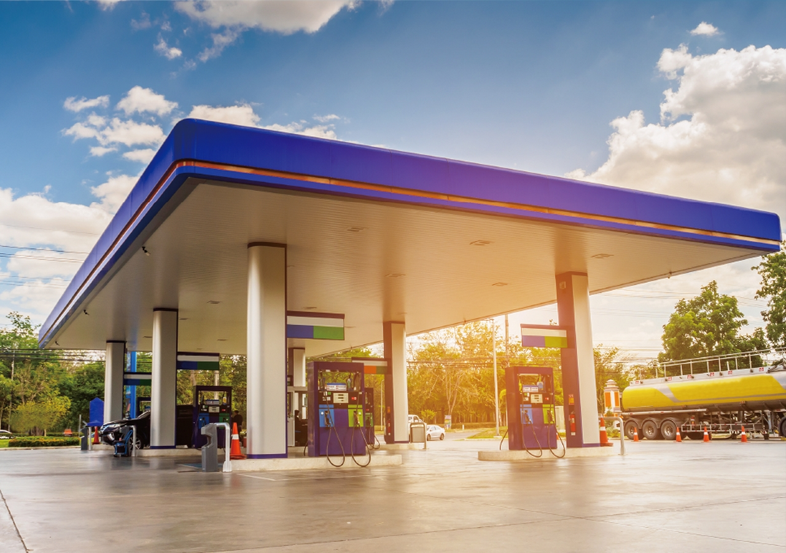

Центральная авто-заправочная станция
2019 г.
Консультация монтажных, пуско-наладочных работ при капитальном строительстве центральной авто заправочной станции. Настройка сетевого коммутационного оборудования, настройка и калибровка топливно-раздаточных колонок, систем заземления и автоматизированной системы налива автоцистерн.
